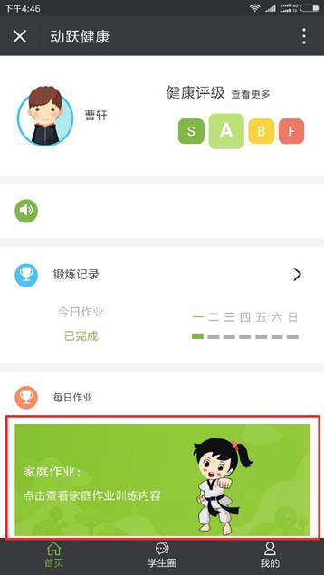
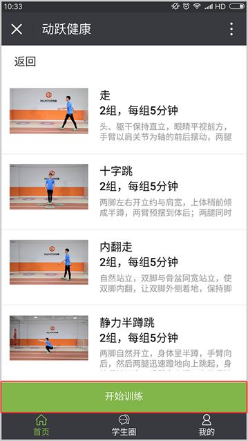
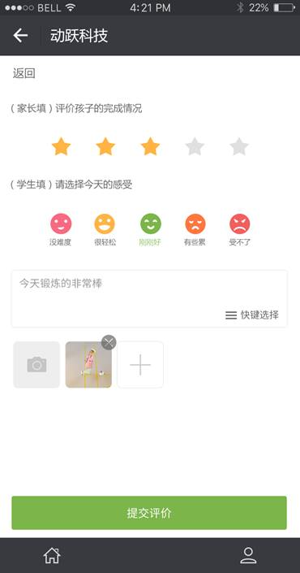
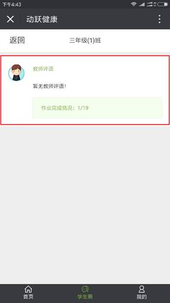
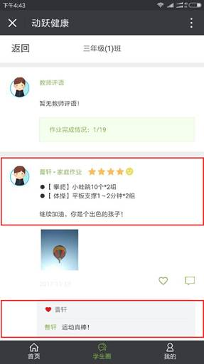

学生如何完成家庭作业：
视频教程：
关注动跃健康的官方微信公众号，点击学生入口，使用动跃体育教学管理平台的注册账号及密码登陆进入微信客户端。
1. 点击进入动跃健康学生端页面，在首页页面上，点击【家庭作业】。

2. 进入家庭作业页面，页面显示教师所布置的家庭作业任务，点击【开始训练】按钮，进入家庭作业训练详细页。

3. 点击播放按钮，观看家庭作业动作视频，按照家庭作业动作要求完成家庭作业。

4. 所有家庭作业完成后，进入家庭作业评价阶段，家长对孩子家庭作业完成情况的评价和孩子对自己完成家庭作业是难易程度的感受，上传锻炼效果图，点击【提交评价】，长期坚持，可直观观察到孩子在家庭作业完成部分的成长情况。

学生圈
学生与家长发布视频、图片、文字等交流沟通的方式，发布之后，家长之间可以互相点赞评价，观察孩子之间优秀的地方
1. 教师评语：教师对每个学生完成的家庭作业的评价以及该班级学生家庭作业完成情况。

2. 家长评价交流：家长对学生完成家庭作业的评价，或对动作、强度等有疑问，可发布在学生圈交流讨论，展示孩子优秀的一面，其他家长还可在下方点赞与评价。
